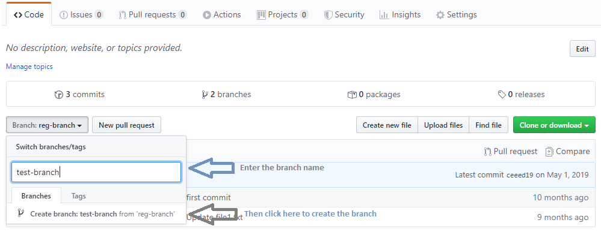

Please comment below if you like the book

Author Bio
This book is written by Biswajit Sundara. Biswajit is a software professional with 10+ years of experience. He has worked on various technologies and also an avid blogger on technology.
Last Edited: May 24th, 2020
 |
@Deepika Das2/29/2020 11:11:37 Thank you for sharing the vital knowledge in such a classified and elaborated manner. It is really helpful. @Biswajit Sundara |
Git Hub Basics
Git is called Repository Management tool or Version Control tool or Source Code Management tool. In real time, multiple people work on the same project. So basically using Git everyone can have a local copy which they will commit frequently to GitHub (web hosting) and then from GitHub everyone will pull the latest code and use it. This way we will be able to merge the work effectively and also if there are any conflicts like two or more people updating the same file etc can be resolved.
- GitHub is the most popular version control tool. There are other tools available in the market also like SVN
- GitHub was acquired by Microsoft on June 4th, 2018
- It allows us to create public, private repositories
- Software companies have enterprise accounts which is more secured
- As a developer we can create our personal account for Free
- GitHub is not only to mantain source codes, we can store word, excel files also
How to create GitHub Account
- Open the URL - https://github.com/
- Give the User id, password of your choice
- Click signup.
- This will create a github account for you.
How to Create Repository
- Login to your github account
- At the top right corner. Click on the menu
- Click on 'Your Repositories'
- Then click on 'New Repository'
- Enter the repository name. For example: githubtest
- You can choose the type of repository - private or public
- Private means only you can see the repository, public means anyone can see
- Then click 'Create Repository'
- It will open a page with some commands and your repository URL. Make a note of it.
- So now a repository or space is created in the github server
Install Github management tools
There are two ways how we can manage our github push/pull operation. Using GUI tools or Command Line tools. Both serves the need, it depends on whichever way you like- GUI - Download the github desktop https://desktop.github.com/
- Command Line - Download the software from here - https://git-scm.com/downloads
Once Git is installed. You need to append the git path in environment variable Path as C:\Program Files\Git\cmd;
Difference between Git & GitHub
Many people get confused here. So Git is the version control tool that we use in the local machines to push the codes. GitHub is the cloud (remote/web) based platform where Git Repositories are stored.GitHub Architecture
Here we are going to discuss about how git works internally.
- Whenever we visualize about GitFlow, there's a folder in our local system and there's a place in the web server. And all our operations are between these two entities.
- When we clone a remote repository, it creates a folder .git in the working directory. It's a hidden folder so enable seeing hidden folders option if you don't see it. If you try to reset then just delete this folder, it will loose all tracking. This is created automatically and saves all the tracking/configuration information.
- When we add files to git, then it moves all those files to staging area (It's a space inside local system only). When we fire the add command, it saves the files into .git/objects folder.
- After adding the files, we can either reset or commit the files to local repo. Commit means a check point. It saves the snapshot of the branch at the time of the commit. A commit is a file stored in .git/objects that specifies a snapshot. It contains one or more references to the parent commits and a reference to a tree object.
- Git Push means transfering the updates from the local repo to the remote repo. So what's the point of doing all these extra work when we can simply transfer from our local to remote. The answer is flexibility of managing the project folder. Using this approach we can track what are the changes, who made the changes, if anything goes wrong, we can move back to the older version etc. Also let's say we have a project of 10 GB size. Every time it will not move the whole project and waste time. It will pick only the changes and move to the remote repo.
- Pulling the repo updates the local repository from the remote repository. Lets say we have made some changes and pushed to the remote repo. Then all my team mates need to pull it to their system and work on it.

- HEAD is the label that indicates where we are in the commit tree. When we want to work on a particular branch then we will have to move there first. So when we fire the command git checkout <branch-name> , the HEAD moves to the branch and whatever changes we make are tracked under that branch.
- Git merge is to combine two branches. let's say we have the code base in the master branch and there's a different branch created for you to work on. Once you are done with your updates and testing then you need to merge your branch with the master branch. So simply go to the master branch by using command git checkout master and then being in the master branch use the command git merge <branch-name> to merge the branch with the master branch. This the error prone area where we got conflict errors that we will discuss in the upcoming sections.
Basic Operations
As we know now GitHub is a version control system. The basic operation is always to push the codes to the remote repository and then pulling the codes from the remote repository.
- Push: Move codes from Local to Remote
- Pull: Move codes from Remote to Local
Push Projects
Here we will see how can we push projects to GitHub.
Let's create a folder testprojand have a text file named file.txt
Launch command prompt
C:\Users\Biswajit\Desktop\wiki\testproj>git init
Initialized empty Git repository in C:/Users/Biswajit/Desktop/wiki/testproj/.git
C:\Users\Biswajit\Desktop\wiki\testproj>git clone https://github.com/biswajitsundara/githubtest.git
Cloning into 'githubtest'...
Username for 'https://github.com': xxxx
Password for 'https://biswajitsundara@github.com':xxxx
warning: You appear to have cloned an empty repository.
C:\Users\Biswajit\Desktop\wiki\testproj>git status
On branch master
No commits yet
Untracked files:
(use git add ..." to include in what will be committed)
file.txt
nothing added to commit but untracked files present (use "git add" to track)
C:\Users\Biswajit\Desktop\wiki\testproj>git add *.*
C:\Users\Biswajit\Desktop\wiki\testproj>git status
On branch master
No commits yet
Changes to be committed:
(use "git rm --cached ..." to unstage)
new file: file.txt
C:\Users\Biswajit\Desktop\wiki\testproj>git commit -m "first commit"
[master (root-commit) a98e199] first commit
1 file changed, 1 insertion(+)
create mode 100644 file.txt
C:\Users\Biswajit\Desktop\wiki\testproj>git status
On branch master
nothing to commit, working tree clean
C:\Users\Biswajit\Desktop\wiki\testproj>git remote add origin https://github.com/biswajitsundara /githubtest.git
C:\Users\Biswajit\Desktop\wiki\testproj>git push -u origin master
Username for 'https://github.com': xxxx
Password for 'https://biswajitsundara@github.com': xxxx
Counting objects: 3, done.
Writing objects: 100% (3/3), 222 bytes | 222.00 KiB/s, done.
Total 3 (delta 0), reused 0 (delta 0)
To https://github.com/biswajitsundara/githubtest.git
* [new branch] master -> master
Branch 'master' set up to track remote branch 'master' from 'origin'.
***** Check the file should be available in the GitHub *******
Pull Operations
Here we will see how can we pull projects from GitHub. Launch command prompt and execute the below commands
C:\Users\Biswajit\Desktop\wiki\testproj>git pull https://github.com/biswajitsundara/githubtest.git
Username for 'https://github.com': biswajitsundara
Password for 'https://biswajitsundara@github.com':
remote: Enumerating objects: 3, done.
remote: Counting objects: 100% (3/3), done.
remote: Total 3 (delta 0), reused 3 (delta 0), pack-reused 0
Unpacking objects: 100% (3/3), done.
From https://github.com/biswajitsundara/githubtest
* branch HEAD -> FETCH_HEAD
Basic Commands
1. Git initialization
This command initializes an empty repository. It creates the hidden .git folder
git init
2. Git configuration
This command saves the user name & email address so that we don't have to provide it again and again.
git config --global user.name "biswajitsundara"
git config --global user.email "biswajitsundara@gmail.com"
3. Git clone
This command copies the remote repository to the local drive.
git clone <remote repository url>
4. Git add files/folders
This command adds files or folders to git staging.
#To add all type of files
git add *.*
#To add a single file
git add <filename with extension>
#To add multiple files
git add <filename with extension> <filename with extension>
#To add a folder (remember empty folders are not added)
git add <folder name>
5. Git remove files
This command removes files.
#If the file is added but not comitted yet and you want to delete it from staging.
git rm -f --cached <filename with extension>
#If the folder is added but not comitted yet and you want to delete it from staging.
git rm -r --cached <foldername>
#If the file exists in the repository and we want to delete it
git rm <filename with extension>
#If we want to remove all files
git rm *.*
6. Git commit changes
This will create a checkpoint to move the files to remote repo.
#Commit a single file
git commit <filename with extension> -m "Message"
#Commit all the files
git commit -a -m "Message"
7. Git display log
This command gives us the history of git actions.
#All git commits
git log
#All git commits with difference. Keep pressing enter to view page by page.
git log -p
8. Git status
This command displays files added to the staging and untracked files.
git status
9. Git display difference
This command is used to show difference between two branches.
#Get the difference between two branches
git diff branch1..branch2
#Get the difference between master and another branch
git diff master..branch1
#Compare commits between two branches
git log branch1..branch2
#Compare two branches with respect to one file
$ git diff branch1...branch2 -- <file>
10. Undo Changes
This command will revert the changes done.
1)If we have deleted a file but haven't committed yet, we can undo this.
git checkout HEAD <filename with extension>
2)If we have deleted a file and just comitted the same to github
#Then first find the last commit hash and then restore the file
git log -n1 --format=format:"%H"
<returns commit hash>
git checkout <commit hash>~1 -- <deleted file with extension>
3)If we have deleted a file and comitted but don't remember when comitted.
#Then first find the commit hash and then restore the file
git rev-list -n 1 HEAD -- <file name with extension>
<returns commit hash>
git revert --no-commit <commit hash>..HEAD
git commit
1. Git initialization
This command initializes an empty repository. It creates the hidden .git foldergit init
2. Git configuration
This command saves the user name & email address so that we don't have to provide it again and again.git config --global user.name "biswajitsundara" git config --global user.email "biswajitsundara@gmail.com"
3. Git clone
This command copies the remote repository to the local drive.git clone <remote repository url>
4. Git add files/folders
This command adds files or folders to git staging.#To add all type of files git add *.* #To add a single file git add <filename with extension> #To add multiple files git add <filename with extension> <filename with extension> #To add a folder (remember empty folders are not added) git add <folder name>
5. Git remove files
This command removes files.#If the file is added but not comitted yet and you want to delete it from staging. git rm -f --cached <filename with extension> #If the folder is added but not comitted yet and you want to delete it from staging. git rm -r --cached <foldername> #If the file exists in the repository and we want to delete it git rm <filename with extension> #If we want to remove all files git rm *.*
6. Git commit changes
This will create a checkpoint to move the files to remote repo.#Commit a single file git commit <filename with extension> -m "Message" #Commit all the files git commit -a -m "Message"
7. Git display log
This command gives us the history of git actions.#All git commits git log #All git commits with difference. Keep pressing enter to view page by page. git log -p
8. Git status
This command displays files added to the staging and untracked files.git status
9. Git display difference
This command is used to show difference between two branches.#Get the difference between two branches git diff branch1..branch2 #Get the difference between master and another branch git diff master..branch1 #Compare commits between two branches git log branch1..branch2 #Compare two branches with respect to one file $ git diff branch1...branch2 -- <file>
10. Undo Changes
This command will revert the changes done.1)If we have deleted a file but haven't committed yet, we can undo this. git checkout HEAD <filename with extension> 2)If we have deleted a file and just comitted the same to github #Then first find the last commit hash and then restore the file git log -n1 --format=format:"%H" <returns commit hash> git checkout <commit hash>~1 -- <deleted file with extension> 3)If we have deleted a file and comitted but don't remember when comitted. #Then first find the commit hash and then restore the file git rev-list -n 1 HEAD -- <file name with extension> <returns commit hash> git revert --no-commit <commit hash>..HEAD git commit
Branching
You have a team of hundreds of people and all are working on the same code repository, some are working on user stories, some on hot fixes and some on production issues etc. What if you make few changes and that breaks the whole code base. Branching allows users to create their own branches and then merge it later with the master branch. Which always helps to keep the master branch stable.
Creating a branch
- Go to the remote repository (GitHub). By default master branch is selected. This button is on the left side of the same row where clone/download button is available.
- Click on the drop down. It will show a text box with place holder text 'create or find a branch'
- Type the branch name that you wish to create.
- As soon as you type the name, on the same drop down menu, you will see the text 'create branch: branch-name'. Click on that.
- Congrats! you have created the branch.
- Lets say our repository name is githubtest and we have created a branch reg-branch.

Working on the branch
Remember the reg-branch is created in github first.
C:\Users\Biswajit\Desktop\wiki\testproj>git init
Initialized empty Git repository in C:/Users/Biswajit/Desktop/wiki/testproj/.git
C:\Users\Biswajit\Desktop\wiki\testproj>git clone https://github.com/biswajitsundara/githubtest.git
Cloning into 'githubtest'...
Username for 'https://github.com': biswajitsundara
Password for 'https:// biswajitsundara@github.com':
remote: Enumerating objects: 3, done.
remote: Counting objects: 100% (3/3), done.
remote: Total 3 (delta 0), reused 3 (delta 0), pack-reused 0
Unpacking objects: 100% (3/3), done.
C:\Users\Biswajit\Desktop\wiki\testproj>git checkout reg-branch
'error: pathspec reg-branch' did not match any file(s) known to git.
Enter into the folder pulled from github then checkout to the branch
C:\Users\Biswajit\Desktop\wiki\testproj>cd githubtest
C:\Users\Biswajit\Desktop\wiki\testproj\githubtest>git checkout reg-branch
Switched to a new branch 'reg-branch'
Branch 'reg-branch' set up to track remote branch 'reg-branch' from 'origin'.
C:\Users\Biswajit\Desktop\wiki\testproj\githubtest>git add *.*
C:\Users\Biswajit\Desktop\wiki\testproj\githubtest>git status
On branch reg-branch
Your branch is up to date with 'origin/reg-branch'.
Changes to be committed:
(use "git reset HEAD ..." to unstage)
new file: file1.txt
C:\Users\Biswajit\Desktop\wiki\testproj\githubtest>git commit -m "second commit"
[reg-branch 7a373ff] second commit
1 file changed, 2 insertions(+)
create mode 100644 file1.txt
C:\Users\Biswajit\Desktop\wiki\testproj\githubtest>git push origin reg-branch
Username for 'https://github.com': biswajitsundara
Password for 'https:// biswajitsundara @github.com':
Counting objects: 3, done.
Delta compression using up to 4 threads.
Compressing objects: 100% (2/2), done.
Writing objects: 100% (3/3), 284 bytes | 284.00 KiB/s, done.
Total 3 (delta 0), reused 0 (delta 0)
To https://github.com/ biswajitsundara/githubtest.git
a98e199..7a373ff reg-branch -> reg-branch
Pull Branch
By default all branches will not be cloned from the remote repo. It will copy only the master branch. Then we can pull a specific branch.
Or If we have already synced our local repo with remote repo then just the pull command will refresh the branch repo.
C:\Users\Biswajit\Desktop\wiki\testproj>git pull origin reg-branch
Username for 'https://github.com': bisxxxxx
Password for 'https://xxxxx@github.com':
From https://github.com/xxxxx/githubtest
* branch reg-branch -> FETCH_HEAD
Updating a98e199..ceeed19
Fast-forward
file1.txt | 3 +++
1 file changed, 3 insertions(+)
create mode 100644 file1.txt
Conflict Resolution
Merge conflict is one of the most challenging and tedious task that most of the teams have to deal with. The only suggestion to avoid merge conflict is frequently moving the updates to GitHub and to work on freshly pulled github project.
When Merge Conflict Happens
- Let's say there's a file in our repository named file.txt
- The content of the file is
test file
test file this line is added by Jack
test file this line is added by Mark
test file <<<<<<< HEAD this line is added by Mark ======= this line is added by Jack >>>>>>> 993319df944d0ee742fsdfs74829860e16870f508
How to resolve merge conflict
There are different ways how we can resolve merge conflicts. Talk to Jack and agree on which update to keep (yours,Jack's). This is the best practice always. Never ever override someone's work until unless you have the confirmation.Approach #1: Keep your update and discard other's
We can do this either command line or by manually updating the file. Using command line works like a charm. If you have huge number of conflicts then it's a tedious affair to get into the file and remove one by one. Also there can be multiple files having conflict. So simply using the command --ours is going to remove all the extra symbols from the file and keep only your update and discard their update.
git checkout --ours file.txt git add file.txt git commit -m "using mine" git push -u origin master
Approach #2: Keep other's update and discard yours
We can do this either command line or by manually updating the file. Using command line works like a charm. If you have huge number of conflicts then it's a tedious affair to get into the file and remove one by one. Also there can be multiple files having conflict. So simply using the command --theirs is going to remove all the extra symbols from the file and keep only their update and discard your update.
git checkout --theirs file.txt git add file.txt git commit -m "using theirs" git push -u origin master
Approach #3: Keep both the updates
If we want to keep both the updates. Then open the file in text editor and manually remove the extra symbols/annotations added to the file highlighting the conflict. Then issue the commands like adding to stage, then commit and push to master.
git pull https://github.com/biswajitsundara/githubtest.git git status git add file.txt git commit -m "fs" git push -u origin master
Complete Flow
C:\Users\Biswajit\Desktop\testproj>git init Initialized empty Git repository in C:/Users/Biswajit/Desktop/testproj/.git/ C:\Users\Biswajit\Desktop\testproj>git clone https://github.com/biswajitsundara/githubtest.git Cloning into 'githubtest'... Username for 'https://github.com': xxxxxx Password for 'https://biswajitsundara@github.com': remote: Enumerating objects: 21, done. remote: Counting objects: 100% (21/21), done. remote: Compressing objects: 100% (12/12), done. remote: Total 21 (delta 0), reused 9 (delta 0), pack-reused 0 Unpacking objects: 100% (21/21), done. C:\Users\Biswajit\Desktop\testproj>cd githubtest C:\Users\Biswajit\Desktop\testproj\githubtest>git pull https://github.com/biswajitsundara/githubtest.git Username for 'https://github.com': xxxxx Password for 'https://biswajitsundara@github.com': From https://github.com/biswajitsundara/githubtest * branch HEAD -> FETCH_HEAD Already up to date. C:\Users\Biswajit\Desktop\testproj\githubtest>git status On branch master Your branch is up to date with 'origin/master'. Changes not staged for commit: (use "git add..." to update what will be committed) (use "git restore ..." to discard changes in working directory) modified: file.txt no changes added to commit (use "git add" and/or "git commit -a") ------- At this time someone updated the file.txt in remote repo ------- At this time you updated the file.txt in your local C:\Users\Biswajit\Desktop\testproj\githubtest>git add file.txt C:\Users\Biswajit\Desktop\testproj\githubtest>git commit -m "a" [master 4429a1d] a 1 file changed, 1 insertion(+) C:\Users\Biswajit\Desktop\testproj\githubtest>git remote add origin https://github.com/biswajitsundara/githubtest.git C:\Users\Biswajit\Desktop\testproj\githubtest>git push -u origin Username for 'https://github.com': xxxxxx Password for 'https://biswajitsundara@github.com': To https://github.com/biswajitsundara/githubtest.git ! [rejected] master -> master (fetch first) error: failed to push some refs to 'https://github.com/biswajitsundara/githubtest.git' hint: Updates were rejected because the remote contains work that you do hint: not have locally. This is usually caused by another repository pushing hint: to the same ref. You may want to first integrate the remote changes hint: (e.g., 'git pull ...') before pushing again. hint: See the 'Note about fast-forwards' in 'git push --help' for details. C:\Users\Biswajit\Desktop\testproj\githubtest>git pull https://github.com/biswajitsundara/githubtest.git Username for 'https://github.com': xxxxxx Password for 'https://biswajitsundara@github.com': remote: Enumerating objects: 5, done. remote: Counting objects: 100% (5/5), done. remote: Compressing objects: 100% (3/3), done. remote: Total 3 (delta 0), reused 0 (delta 0), pack-reused 0 Unpacking objects: 100% (3/3), done. From https://github.com/biswajitsundara/githubtest * branch HEAD -> FETCH_HEAD Auto-merging file.txt CONFLICT (content): Merge conflict in file.txt Automatic merge failed; fix conflicts and then commit the result. C:\Users\Biswajit\Desktop\testproj\githubtest>git checkout --ours file.txt Updated 1 path from the index C:\Users\Biswajit\Desktop\testproj\githubtest>git add file.txt C:\Users\Biswajit\Desktop\testproj\githubtest>git commit -m "using mine" [master 5bc9df1] using mine C:\Users\Biswajit\Desktop\testproj\githubtest>git push -u origin master Username for 'https://github.com': xxxxxx Password for 'https://biswajitsundara@github.com': Enumerating objects: 8, done. Counting objects: 100% (8/8), done. Delta compression using up to 4 threads Compressing objects: 100% (4/4), done. Writing objects: 100% (4/4), 405 bytes | 405.00 KiB/s, done. Total 4 (delta 2), reused 0 (delta 0) remote: Resolving deltas: 100% (2/2), completed with 1 local object. To https://github.com/biswajitsundara/githubtest.git d5d8e54..5bc9df1 master -> master Branch 'master' set up to track remote branch 'master' from 'origin'. C:\Users\Biswajit\Desktop\testproj\githubtest>git pull https://github.com/biswajitsundara/githubtest.git Username for 'https://github.com': xxxxxx Password for 'https://biswajitsundara@github.com': From https://github.com/biswajitsundara/githubtest * branch HEAD -> FETCH_HEAD Already up to date.
SSH Key Generation
SSH is a network protocol. If we open GitHub repository and click on the clone/download button we will see two tabs. One having the https url and another with ssh. We all know https is the network protocol to access web resources similarly SSH also known as Secure Shocket Shell is a network protocol that provides admins a secure way to access remote computer.
- When we work with GitHub Enterprise (in company network) then using https protocol we can't work with remote repository. Either we can use GitDesktop or SSH key approach as Security is the foremost thing in all enterprise repositories.
- Working with GitHub repo, we often need to enter the user name & password. If we use the SSH approach then we don't have to give username/password everytime.
- SSH keys are generated in pairs. When we generate SSH key, it generates two files - private (which is only for your computer) and public (that we will save in GitHub settings). While working when both the keys match, access is granted to the remote repo.
- The public SSH key can be shared to others to work on the GitHub repo.
- Generally I use command prompt to execute Git commands however I noticed the key gen command didn't work with the windows command prompt. So while working with the Git SSH key generation, use GitBash instead of command prompt.
Without SSH token
Let me tell you what's the message you would see if you don't have SSH key and try to use the SSH url from git hub.
C:\Users\Biswajit\Desktop\wiki\testproj>git init
Initialized empty Git repository in C:/Users/Biswajit/Desktop/wiki/testproj/.git
C:\Users\Biswajit\Desktop\wiki\testproj>git clone git@github.com:biswajitsundara/githubtest.git
Cloning into 'githubtest'...
git@github.com: Permission denied (publickey).
fatal: Could not read from remote repository.
Please make sure you have the correct access rights
and the repository exists.
Generate SSH Key
When prompted for the file name to store the RSA id and to enter the pass phrase, just press enter to continue. Pass phrase is to add additional security.
$ ssh-keygen -o -t rsa -C "biswajitsundara@gmail.com"
Generating public/private rsa key pair.
Enter file in which to save the key (/c/Users/Biswajit/.ssh/id_rsa):
Created directory '/c/Users/Biswajit/.ssh'.
Enter passphrase (empty for no passphrase):
Enter same passphrase again:
Your identification has been saved in /c/Users/Biswajit/.ssh/id_rsa.
Your public key has been saved in /c/Users/Biswajit/.ssh/id_rsa.pub.
The key fingerprint is:
SHA256:FWEUYRIWENJFSAFHAASLDAIBNMMBCJKADSJ4NBAGABDJK biswajitsundara@gmail.com
The key's randomart image is:
+---[RSA 3072]----+
| .o... ooo. |
| .= . +=. |
| .+.$. o++.|
| .oo= +* o+|
| 0*.=o ++o|
| . .= . EO.|
| . o =.+|
| $. .$ .|
| .o.. |
+----[SHA256]-----+
Add SSH Key to GitHub
- There are two SSH keys. One is private & another is public. So the public key we need to add in the GitHub.
- Go to the SSH directory. C:\Users\Biswajit\.ssh and open the file with .pub extension and copy the content to clipboard.
- Then open your github account. Go to Settings -> Select SSH and GPG Keys menu item -> Under SSH keys select the New SSH key button then give a key name and then paste the key we have copied from .pub file.
Use SSH Authentication
Now that we have SSH key, we can use the SSH url and work on it.
$ git clone git@github.com:biswajitsundara/githubtest.git
Cloning into 'githubtest'...
The authenticity of host 'github.com (XX.XX.XXX.XXX)' can't be established.
RSA key fingerprint is SHA256:nThbg4232JHewhk453BCNZCKJWQOPiKw6E5SY8.
Are you sure you want to continue connecting (yes/no/[fingerprint])? yes
Warning: Permanently added 'github.com,XX.XX.XXX.XXX' (RSA) to the list of known hosts.
remote: Enumerating objects: 9, done.
remote: Counting objects: 100% (9/9), done.
remote: Compressing objects: 100% (5/5), done.
remote: Total 9 (delta 0), reused 6 (delta 0), pack-reused 0
Receiving objects: 100% (9/9), done.
Git Ignore
Git Ignore is a text file in the git repository that tells the git process to exclude or ignore files/directories in the push operation
Why do we need .gitignore file
Let's take this scenario, When we import a maven project in eclipse, it creates a folder named .settings, when we run automated tests, it generates log files, html reports. So over the time these files, directories become really huge and when we commit everything to github, these big file, directories are also moved to github remote repository which are of no use.
How to use .gitignore file
- In the github root node, create a text file .gitignore
- Add the file name/patterns to exclude. E.g .settings
- Then execute git status -- you won't see .settings folder under untracked files that means git is ignoring that.
- push the codes to remote repository, you will notice .settings folder is not moved.
Example of .gitignore file
.settings .classpath .project /target /test-output
Summary
.gitignore is really simple to use and yet so useful which helps us to control which file types we would like not to commit to remote repository.GitHub Action
GitHub Action is MicroSoft's answer to CI/CD. We all know how the Jenkins job triggers based on GitHub commit and runs the automated suite. Since most of the code bases are hosted in GitHub, it becomes really easy to integrate with GitHub Actions for a smooth delivery pipeline.
What is GitHub Action
- GitHub Action is to create CI-CD workflows.
- If your source code is hosted in GitHub, then you can make use of it.
- There are approx 2000 minutes free per month and then it will be chargeable.
- The server used for GitHub Actions is GitHub's own VM/cloud server.
- It has all the capabilities like any other CI/CD tool however it's in the early stage.
GitHub Action Scenarios
Below are some scenarios where we can use github actions.- Let's say as soon as you push the code to GitHub, it trigger's the job, validates and shows whether the build is a success or failure.
- As soon as you create a pull request, it trigger's the job and saves the test execution status, so the reviewer can check the committed code works fine and it helps to accept the merge request.
- Let's say the requirement is don't do anything if code is pushed/pulled to other branches and trigger the job only if the code is pushed to master branch. That's also possible.
How to configure GitHub Action?
- Open your github remote repository
- Click on Create new file button
- Create file .github/workflows/<filename.yml>
- This will create a folder .github -> sub folder workflows -> and a file with extension .yml
- Put the code inside this yml file and commit changes.
Configuring the workflow
There are several commands that we can use to customize the workflow file. Below is an example of a simple workflow file that runs the command 'maven test' on windows machine as soon as code is pushed to 'master' branch.
name: Demo CI
on:
push:
branches: [ master ]
jobs:
build:
runs-on: windows-latest
steps:
- uses: actions/checkout@v2
- name: Test the application
run: |
mvn test
Test the workflow
- Now pull the repository to local, make some changes and commit the changes
- We have configured the workflow as if we 'push' to 'master' branch then the workflow should execute
- Now go to GitHub -> Actions tab -> You will see every step is getting executed.
- It will execute the command 'mvn test' and display the build status
- The build history will be saved under this actions tab also.